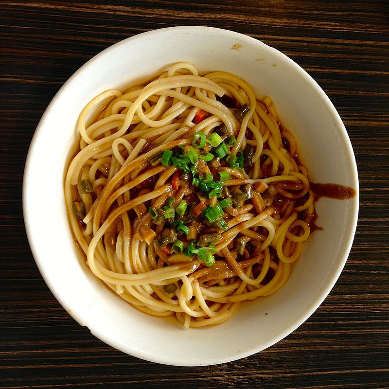
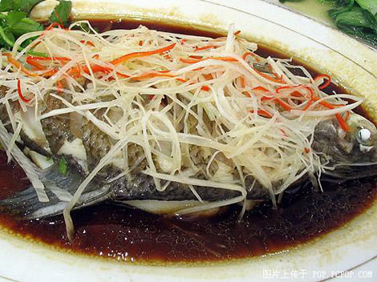
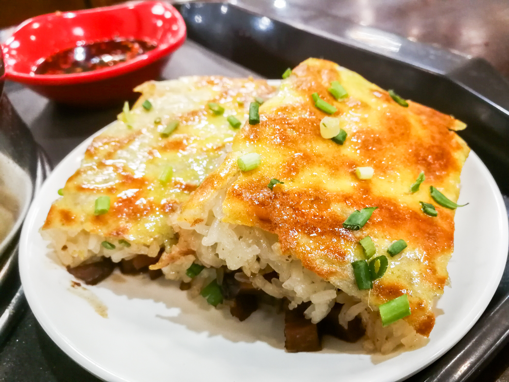

Hot dry noodle, also known as reganmian, is a traditional dish of Wuhan,
the capital of the Hubei province in central China.
Hot dry noodles have a history in Chinese food culture for 80 years,
and it is unique because the noodles are not in a broth like most other Asian-style
hot noodle dishes.It is the most significant, famous and popular breakfast food in
Wuhan, often sold in street carts and restaurants in residential and business areas.
Breakfasts such as hot dry noodles are available from as early as 5 am, and
usually appear at Wuhan's night markets as a late-night snack. These noodle can be
prepared within minutes and are affordable, so they are also a popular breakfast
choice. Hot dry noodles restaurants are all over the city.
With a history of over 1,700 years, Steamed Wuchang
Fish is a typical food in Wuhan. This freshwater fish,
when steamed together with mushrooms, bamboo shoots and
chicken soup, keeps both the original fresh taste of the
fish and the nutrients. China's Chairman Mao Zedong in his
poem "Swimming" writes: "I have just drunk the waters of Changsha.
And come to eat the fish of Wuchang." Actually, the so-called
"Wuchang Fish" is not the lake fish from the present
Wuchang, but those fished from the waters in E Country,
because in ancient times, the name Wuchang referred to all
the area of the present E Country.


Doupi also named as "Tri-delicacy doupi."It is often sold as a street food.
The name of the food comes from the material of the outside layer, which
is made out of a blend of green bean powder, eggs, milk, and flour.This dish was
invented in 1931 by a local chef who improved the traditional Doupi cooking style
and later went on to open the famous restaurant named LaoTongCheng.At the beginning,
people made doupi as holiday meals at every festival. They made the mung beans mix
with the rice and grind them into a paste. Then they spread the paste into a thin pancake
named bean skin and let it wrap sticky rice and diced meat. Finally, they fried it.
Many years later, doupi became a common breakfast